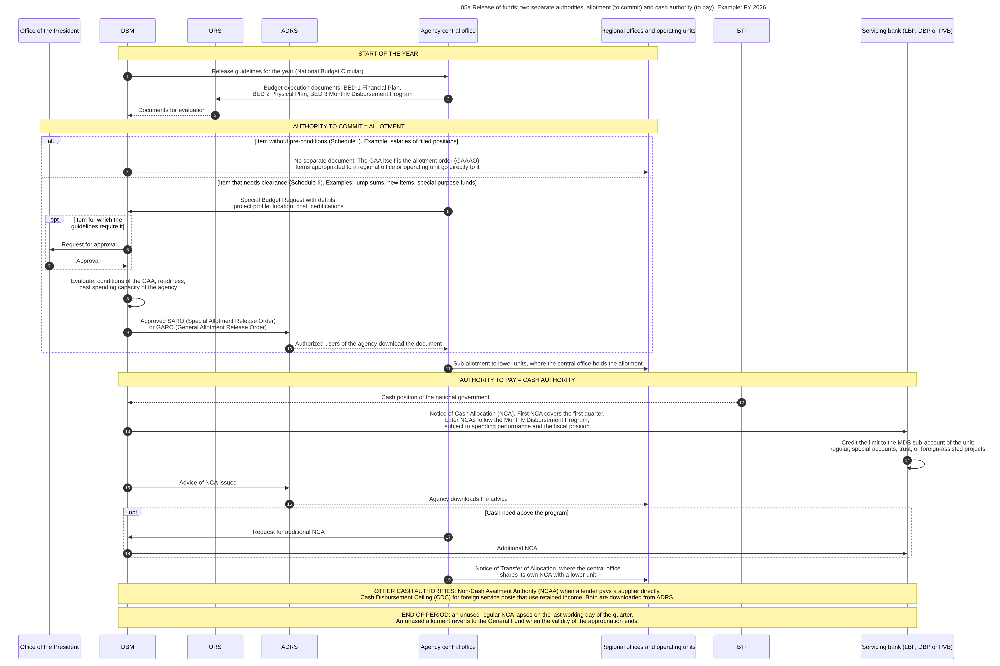

Diagram 05a · Mermaid sequence diagram
Release of funds: two separate authorities, allotment (to commit) and cash authority (to pay). Example: FY 2026
Question: After the GAA takes effect, what must an agency hold before it may sign a contract, and what must it hold before it may pay?

What the diagram shows
- Question: after the GAA takes effect, what must an agency hold before it may sign a contract, and what must it hold before it may pay?
- Idea: an ALLOTMENT lets the agency commit the government (incur an obligation). It contains no cash. A NOTICE OF CASH ALLOCATION (NCA) lets the agency order payments up to a limit within a period. The two are issued separately and for different amounts and periods.
- Sources: all steps except 11, 12 and 19 [NBC599] (DBM National Budget Circular No. 599 of 5 January 2026). Digital delivery of SARO and of the advice of NCA through ADRS [ADRS][NBC599]. Submission of execution documents through URS [NBC599].
- From the accounting manual of 2015, not from the FY 2026 circular: step 19. The Manual defines the Notice of Transfer of Allocation as the "authority issued by the Central Office to its regional and operating units to cover the latter's cash requirements" [GAM-V1 Ch.3 s.3]. The FY 2026 circular does not mention it.
- General knowledge, not opened in a source here: step 11 (sub-allotment by the central office). The report FAR 1-B lists allotments and sub-allotments [JC2019-1], and I did not read a rule on the act itself. Step 12 (BTr informs DBM of the cash position) is my reading of the phrase "subject to the fiscal position".
- Warning: the table on NCA validity in my copy of the circular was partly unreadable.
Steps
The numbers are those of the diagram.
| Step | Who acts | Towards whom | What is done or passed | Basis |
|---|---|---|---|---|
| 1 | DBM | Agency central office | Release guidelines for the year (National Budget Circular) | NBC599 |
| 2 | Agency central office | URS | Budget execution documents: BED 1 Financial Plan, BED 2 Physical Plan, BED 3 Monthly Disbursement Program | NBC599 s.3.9 |
| 3 | URS | DBM | Documents for evaluation | NBC599 s.3.9 |
| 4 | DBM | Regional offices and operating units | No separate document. The GAA itself is the allotment order (GAAAO). Items appropriated to a regional office or operating unit go directly to it | NBC599 s.3.7, s.3.8 |
| 5 | Agency central office | DBM | Special Budget Request with details: project profile, location, cost, certifications | NBC599 s.4.1 |
| 6 | DBM | Office of the President | Request for approval | NBC599 s.4.1.1 |
| 7 | Office of the President | DBM | Approval | NBC599 s.4.1.1 |
| 8 | DBM | (own action) | Evaluate: conditions of the GAA, readiness, past spending capacity of the agency | NBC599 s.4.1.1 |
| 9 | DBM | ADRS | Approved SARO (Special Allotment Release Order) or GARO (General Allotment Release Order) | NBC599 s.3.7, ADRS |
| 10 | ADRS | Agency central office | Authorized users of the agency download the document | ADRS |
| 11 | Agency central office | Regional offices and operating units | Sub-allotment to lower units, where the central office holds the allotment | GK. Sub-allotments are listed in report FAR 1-B: JC2019-1 |
| 12 | BTr | DBM | Cash position of the national government | Inference from NBC599 s.4.2 |
| 13 | DBM | Servicing bank (LBP, DBP or PVB) | Notice of Cash Allocation (NCA). First NCA covers the first quarter. Later NCAs follow the Monthly Disbursement Program, subject to spending performance and the fiscal position | NBC599 s.4.2.1 |
| 14 | Servicing bank (LBP, DBP or PVB) | (own action) | Credit the limit to the MDS sub-account of the unit: regular, special accounts, trust, or foreign-assisted projects | NBC599 s.4.2.1.6 |
| 15 | DBM | ADRS | Advice of NCA Issued | ADRS |
| 16 | ADRS | Regional offices and operating units | Agency downloads the advice | ADRS |
| 17 | Agency central office | DBM | Request for additional NCA | NBC599 s.4.2.1 |
| 18 | DBM | Servicing bank (LBP, DBP or PVB) | Additional NCA | NBC599 s.4.2.1 |
| 19 | Agency central office | Regional offices and operating units | Notice of Transfer of Allocation, where the central office shares its own NCA with a lower unit | GAM-V1 Ch.3 s.3. Not mentioned in NBC599 |
Code

---
title: "05a Release of funds: two separate authorities, allotment (to commit) and cash authority (to pay). Example: FY 2026"
---
sequenceDiagram
autonumber
%% QUESTION THIS DIAGRAM ANSWERS: after the GAA takes effect, what must an agency hold before it may sign a contract, and what must it hold before it may pay?
%% IDEA: an ALLOTMENT lets the agency commit the government (incur an obligation). It contains no cash. A NOTICE OF CASH ALLOCATION (NCA) lets the agency order payments up to a limit within a period. The two are issued separately and for different amounts and periods.
%% SOURCES: all steps except 11, 12 and 19 [NBC599] (DBM National Budget Circular No. 599 of 5 January 2026). Digital delivery of SARO and of the advice of NCA through ADRS [ADRS][NBC599]. Submission of execution documents through URS [NBC599].
%% FROM THE ACCOUNTING MANUAL OF 2015, NOT FROM THE FY 2026 CIRCULAR: step 19. The Manual defines the Notice of Transfer of Allocation as the "authority issued by the Central Office to its regional and operating units to cover the latter's cash requirements" [GAM-V1 Ch.3 s.3]. The FY 2026 circular does not mention it.
%% GENERAL KNOWLEDGE, NOT OPENED IN A SOURCE HERE: step 11 (sub-allotment by the central office). The report FAR 1-B lists allotments and sub-allotments [JC2019-1], and I did not read a rule on the act itself. Step 12 (BTr informs DBM of the cash position) is my reading of the phrase "subject to the fiscal position".
%% WARNING: the table on NCA validity in my copy of the circular was partly unreadable.
participant OP as Office of the President
participant DBM as DBM
participant URS as URS
participant ADRS as ADRS
participant CO as Agency central office
participant OU as Regional offices and operating units
participant BTR as BTr
participant GSB as Servicing bank (LBP, DBP or PVB)
Note over DBM,OU: START OF THE YEAR
DBM->>CO: Release guidelines for the year (National Budget Circular)
CO->>URS: Budget execution documents: BED 1 Financial Plan,<br/>BED 2 Physical Plan, BED 3 Monthly Disbursement Program
URS-->>DBM: Documents for evaluation
Note over OP,OU: AUTHORITY TO COMMIT = ALLOTMENT
alt Item without pre-conditions (Schedule I). Example: salaries of filled positions
DBM-->>OU: No separate document. The GAA itself is the allotment order (GAAAO).<br/>Items appropriated to a regional office or operating unit go directly to it
else Item that needs clearance (Schedule II). Examples: lump sums, new items, special purpose funds
CO->>DBM: Special Budget Request with details:<br/>project profile, location, cost, certifications
opt Item for which the guidelines require it
DBM->>OP: Request for approval
OP-->>DBM: Approval
end
DBM->>DBM: Evaluate: conditions of the GAA, readiness,<br/>past spending capacity of the agency<br/>#nbsp;
DBM->>ADRS: Approved SARO (Special Allotment Release Order)<br/>or GARO (General Allotment Release Order)
ADRS-->>CO: Authorized users of the agency download the document
end
CO->>OU: Sub-allotment to lower units, where the central office holds the allotment
Note over DBM,GSB: AUTHORITY TO PAY = CASH AUTHORITY
BTR-->>DBM: Cash position of the national government
DBM->>GSB: Notice of Cash Allocation (NCA). First NCA covers the first quarter.<br/>Later NCAs follow the Monthly Disbursement Program,<br/>subject to spending performance and the fiscal position
GSB->>GSB: Credit the limit to the MDS sub-account of the unit:<br/>regular, special accounts, trust, or foreign-assisted projects<br/>#nbsp;
DBM->>ADRS: Advice of NCA Issued
ADRS-->>OU: Agency downloads the advice
opt Cash need above the program
CO->>DBM: Request for additional NCA
DBM->>GSB: Additional NCA
end
CO->>OU: Notice of Transfer of Allocation, where the central office<br/>shares its own NCA with a lower unit
Note over DBM,GSB: OTHER CASH AUTHORITIES: Non-Cash Availment Authority (NCAA) when a lender pays a supplier directly.<br/>Cash Disbursement Ceiling (CDC) for foreign service posts that use retained income. Both are downloaded from ADRS.
Note over DBM,GSB: END OF PERIOD: an unused regular NCA lapses on the last working day of the quarter.<br/>An unused allotment reverts to the General Fund when the validity of the appropriation ends.